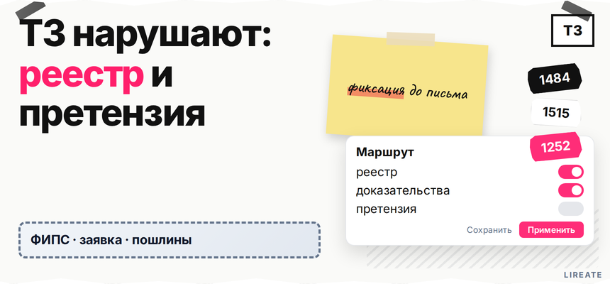

Конкурент копирует логотип на упаковке или в карточке маркетплейса. Жалоба площадке снимет карточку, но не остановит офлайн и не даст компенсацию. Если есть свидетельство, запрос "нарушение прав на товарный знак что делать" закрывается цепочкой: реестр → сходство и однородность → фиксация → претензия или иск. Ниже пять шагов по ст. 1484, 1515 и 1252 ГК РФ. Вы проверите охрану, соберёте доказательства и выберете канал защиты. 20.11.2026; не индивидуальная юридическая консультация.

TL;DR / Быстрый инсайт: Сначала выписка из Поисковой платформы или открытых реестров на fips.ru/registers-web - срок, перечень товаров, залог, лицензии. Исключите ст. 1487 (исчерпание). Сравните графику, звук, смысл и однородность товаров; зафиксируйте URL и время (п. 55 ППВС № 10). Претензия с расчётом компенсации к ЮЛ/ИП обязательна перед иском о деньгах (п. 5.1 ст. 1252), 30 дней молчания. Компенсация: 10 000 - 10 000 000 ₽ с 04.01.2026 (п. 4 ст. 1515). Для пресечения без денег претензия не всегда обязательна.
Товарный знак - это зарегистрированное название, логотип или их сочетание, которое отличает ваш товар или услугу на рынке. Исключительное право даёт вам запрещать чужое сходное использование в однородной сфере. Гайд для владельца свидетельства: ИП, ООО, производитель, селлер с охраной. Нет регистрации - позиция слабее; отдельный маршрут подачи заявки, здесь не разбираем. Типовые возражения, которые вам могут ответить, описаны в материале ответ на претензию по товарному знаку (сторона нарушителя).
Делайте: откройте карточку по номеру свидетельства в ФИПС или Поисковой платформе Роспатента. Выпишите дату истечения (ст. 1491), точный перечень товаров и услуг (не только номер класса МКТУ), изображение знака, правообладателя, записи о залоге, лицензии, оспаривании.
Не делайте: слать агрессивную претензию, если вы лицензиат без права на судебную защиту или представитель без доверенности. Действуйте от имени правообладателя или приложите документ.
Проверьте, не входит ли спорный товар в ваш перечень. Если конкурент работает в классе, которого нет в свидетельстве, спор усложняется - нужна оценка однородности, а не автоматический выигрыш.
Нарушение - это использование сходного обозначения для тех же или однородных товаров, когда покупатель может спутать источник (п. 1, 3 ст. 1484). Суды смотрят на графическое, фонетическое и смысловое сходство и на однородность в совокупности (п. 162 ППВС № 10). Достаточно вероятности смешения, не факта (там же).
Зафиксируйте, как именно используют знак по п. 2 ст. 1484:
| Способ использования (п. 2 ст. 1484) | Что сравнить | Что приложить к претензии |
|---|---|---|
| На товарах и упаковке | Элементы знака, цвет, шрифт | Фото, чек контрольной закупки |
| В сети, домен, карточка МП | URL, скрин, название продавца | Распечатка с адресом и временем |
| Реклама, вывеска, документы | Макет, место размещения | Фото точки, копия буклета |
Перед требованиями исключите законные сценарии: действующая лицензия, повторный ввод товара в оборот вами или с вашего согласия (ст. 1487). При сомнении начните с запроса документов, а не с максимальной компенсации.
Делайте: таблицу "ваш знак - их знак - товар - канал продаж". Не делайте: опираться только на совпадение номера класса МКТУ - однородность шире перечня.
После вашего письма конкурент снесёт карточку. Сначала архив:
Делайте: хранить оригиналы отправки и ответов. Не делайте: полагаться на скрин без адресной строки - суды режут такие доказательства.
Структура письма нарушителю:
Отправьте заказным письмом или через ЭДО, сохраните уведомление о вручении. Ответственность в предпринимательских спорах не зависит от вины нарушителя (п. 3 ст. 1250), но вам всё равно нужно доказать факт использования.
Если оппонент пришлёт отказ с контррасчётом, ориентиры стороны ответчика - в гайде по ответу на претензию и узком ТЗ-контуре в материале L79; это зеркальный сценарий, не копируйте оттуда календарь в свою претензию.
Делайте: один ясный способ расчёта компенсации. Не делайте: требовать 10 млн без связи с эпизодами и доказательствами - это слабый рычаг переговоров.
Матрица перед решением:
| Цель | Канал | Обязательна ли претензия по п. 5.1 ст. 1252 |
|---|---|---|
| Снять карточку на МП | Жалоба площадке + письмо продавцу | Нет, если без компенсации в арбитраже |
| Запрет и изъятие | Иск по подп. 1-2 п. 1 ст. 1252 | Обычно нет для неденежных требований |
| Компенсация ЮЛ/ИП | Претензия → иск в арбитраж | Да |
| Недобросовестная конкуренция | ФАС (при самостоятельном усмотрении) | Отдельный трек, не замена ГК |
Схема правообладателя:
Реестр и перечень товаров → сходство и однородность → фиксация (п. 55) → жалоба МП (при онлайне) → претензия → 30 дней → иск и доказательства в суде
При отказе или молчании соберите иск: подсудность арбитража, госпошлина, приложения - без повтора регистрации знака, см. защита интеллектуальных прав в суде. Универсальный чек входящей претензии (если ответят встречным письмом) - что проверить в претензии правообладателя.
Если спор тяжёлый (несколько юрлиц, трансграничный канал, крупная сумма), имеет смысл сопровождение патентным поверенным или юристом по ИС. На сайте Lireate можно оставить заявку на сопровождение спора по товарному знаку: страница услуг по ТЗ.
Материал проверен: эксперт Елена Ковалева (Главный эксперт по SEO/GEO).
Достоверность данных: нормы ГК РФ, ППВС № 10/2019 и судебная практика сверены на 20.11.2026; ключевые фразы согласованы с семантикой кластера A10.
Механика п. 5.1 ст. 1252 про обязательную претензию перед иском о компенсации в арбитраже нацелена на споры между юрлицами и ИП. С физлицом-потребителем иные правила подсудности и доказывания; уточните объект спора с юристом. Для предпринимателя-нарушителя претензия с расчётом остаётся базовым шагом.
Для прекращения размещения часто хватает жалобы оператору площадки по 289-ФЗ и ст. 1253.1 плюс требования продавцу. Претензия по п. 5.1 обязательна, когда вы идёте в арбитраж за компенсацией к ЮЛ или ИП. Комбинируйте каналы: жалоба для скорости, письмо для фиксации позиции.
Нет. Нужны сходство обозначений и однородность товаров или услуг с учётом канала сбыта и аудитории. Класс - ориентир, не автоматическое нарушение. Соберите сравнение по п. 162 ППВС № 10.
Распечатка страницы с URL и временем (п. 55), нотариальный осмотр при риске удаления, данные продавца с площадки, хронология нескольких эпизодов. Делайте до уведомления нарушителя.
Фикс в пределах 10 000-10 000 000 ₽ проще, если нет точных данных о обороте контрафакта. Метод 2× стоимость требует доказанных цены и количества; суды строго проверяют расчёт. Выберите один способ в претензии и приложите таблицу.
Возможна защита по ст. 1487, если товар введён в оборот на территории РФ правообладателем или с его согласия. Проверьте цепочку поставки у продавца; при параллельном импорте без вашего согласия позиция может быть иной. Не выставляйте максимальную компенсацию, пока не исключили этот сценарий.
При первом же сомнении в однородности, крупной сумме, ответе с встречным иском или нескольких ответчиках. На этапе реестра и первичной претензии часто справляются сами, если пакет доказательств аккуратный.